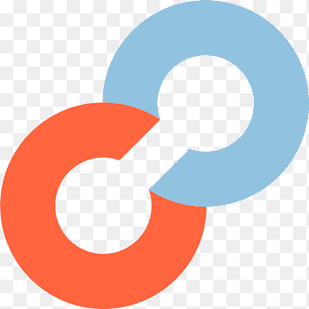
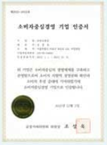
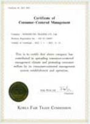

소비자중심경영
항상 소비자를 최우선적으로 생각하며
고객을 위한 yonex가 되겠습니다
고객을 위한 yonex가 되겠습니다
소비자중심경영(ccm) 인증제도
기업이 상품 및 서비스를 기획하고 판매하는 모든 활동에서 소비자를 중심으로 생각하는지, 소비자를 위해 얼마나 노력하는지 정부에서 평가하고 인증하는 제도입니다.
인 증
공정거래위원회
평 가

한국소비자원
업계 최초·유일 소비자 중심 경영 우수기업 인증 획득


기업의 모든 활동을 소비자 관점에서, 소비자 중심으로 지속적으로 개선하였고 그 결과 공정거래위원회가 주관하고 한국 소비자원이 인증하는 소비자 중심 경영 우수기업 인증을 4회 연속 획득하였습니다.
요넥스코리아는 앞으로도 고객의 입장에서 상품과 서비스를 제공하고, 고객이 건강한 삶을 영위할 수 있도록 최선의 노력을 다하겠습니다.